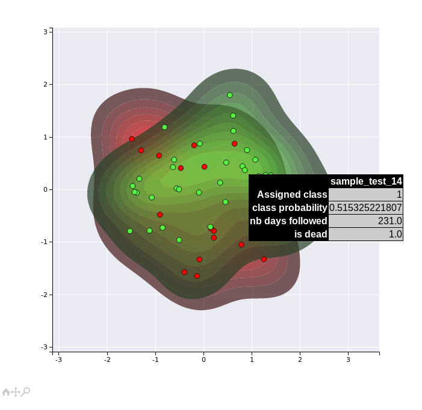

Tutorial: Advanced usage of DeepProg model¶
Visualisation¶
Once a DeepProg model is fitted, it might be interessant to obtain different visualisations of the samples for the training or the test sets, based on new survival features inferred by the autoencoders.For that purpose, we developped two methods to project the samples into a 2D space that can be called once a SimDeepBoosting or a simDeep is fitted.
# boosting class instance fitted using the ensemble tutorial
boosting.plot_supervised_predicted_labels_for_test_sets()
The first method transforms the OMIC matrix activities into the new survival feature space inferred by the autoencoders and projects the samples into a 2D space using PCA analysis. The figure creates a kernel density for each cluster and project the labels of the test set.

A second more sophisticated method uses the new features inferred by the autoencoders to compute new features by constructing a supervised network targetting the inferred subtype labels. The new set of features are then projected into a 2D space using PCA analysis. This second method might present more efficient visualisations of the different clusters since it is uses a supervised algorithm.
boosting.plot_supervised_kernel_for_test_sets()

Note that these visualisation are not very efficient in that example dataset, since we have only a limited number of samples (40) and features. However, they might become more useful for real datasets.
Hyperparameters¶
Hyperparameters can have a considerable influence on the accuracy of DeepProgs models. We set up the default hyperparameters to be used on a maximum of different datasets. However, specific datasets might require additional optimizations. Below, we are listing
Number of clusters¶
The parameters nb_clusters is used to define the number of partitions to produce
#Example
boosting = SimDeepBoosting(
nb_clusters=3)
boosting.fit()
Clustering algorithm¶
By default, DeepProg is using a gaussian mixture model from the scikit-learn library to perform clustering. The hyperparameter of the model are customisable using the mixture_params parameter:
# Default params from the config file:
MIXTURE_PARAMS = {
'covariance_type': 'diag',
'max_iter': 1000,
'n_init': 100
}
boosting = SimDeepBoosting(
mixture_params=MIXTURE_PARAMS,
nb_clusters=3,
cluster_method='mixture' # Default
)
In addition, two alternative clustering approaches are available kmeans, which refers to the scikit-learn KMeans class and coxPH which fits a L1 penalized multi-dimensional Cox-PH model and then dichotomize the samples into K groups using the predicted suvival times. The L1 penalised Cox-PH model is fitted using scikit-survival CoxnetSurvivalAnalysisclass for python3 so it cannot be computed when using pytho 2. Finally, external clustering class instances can be used as long as they have a fit_predict method returning an array of labels, and accepting a nb_clusters parameter.
# External clustering class having fit_predict method
from sklearn.cluster.hierarchical import AgglomerativeClustering
boostingH = SimDeepBoosting(
nb_clusters=3,
cluster_method=AgglomerativeClustering # Default
)
class DummyClustering:
self __init__(self, nb_clusters):
""" """
self.nb_clusters
def fit_predict(M):
""" """
import numpy as np
return np.random.randint(0, self.nb_clusters, M.shape[0])
boostingDummy = SimDeepBoosting(
nb_clusters=3,
cluster_method=DummyClustering # Default
)
Normalisation¶
DeepProg uses by default a four-step normalisation for both training and test datasets:
- Selection of the top 100 features according to the variances
- Rank normalisation per sample
- Sample-sample Correlation similarity transformation
- Rank normalisation
default_normalisation = {
'NB_FEATURES_TO_KEEP': 100,
'TRAIN_RANK_NORM': True,
'TRAIN_CORR_REDUCTION': True,
'TRAIN_CORR_RANK_NORM': True,
}
boosting = SimDeepBoosting(
normalization=default_normalisation
)
However, it is possible to use other normalisation. DeepProg